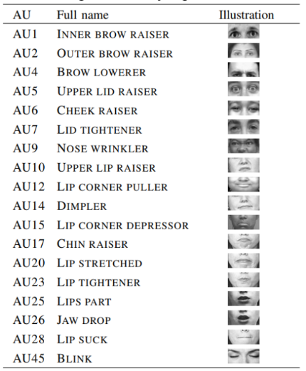

From 02/05/2022 to 31/08/2022, I did an internship as a member of the
Knowledge System Lab at the Osaka Metropolitan University. Located at the
Nakamozu Campus, 1-1 Gakuen-cho, Nakaku, Sakai, Osaka 599-8531. Through this internship, I
wanted to increase my knowledge and skills in computer science and artificial intelligence. And
also experiment how is the life of a research student in Japan. This was a unique experience for
me because I always wanted to know more about Japan and its culture.
Developement of an emotion prediciton system based on facial Action Units with OpenFace application
Machine learning, Data analysis
Research about Computer Supported Collaborative Learning system and emotion facial expression with Action Units
research student in the Knowledge System laboratory
details
The main objective was to implement an emotion prediction function based on facial Action
Units to the Computer Supported Collaborative Learning system developed by the laboratory. As
the internship takes place in a university laboratory, I had to search and gather information by
reading research papers and articles.

list of action units
 results obtained
results obtained